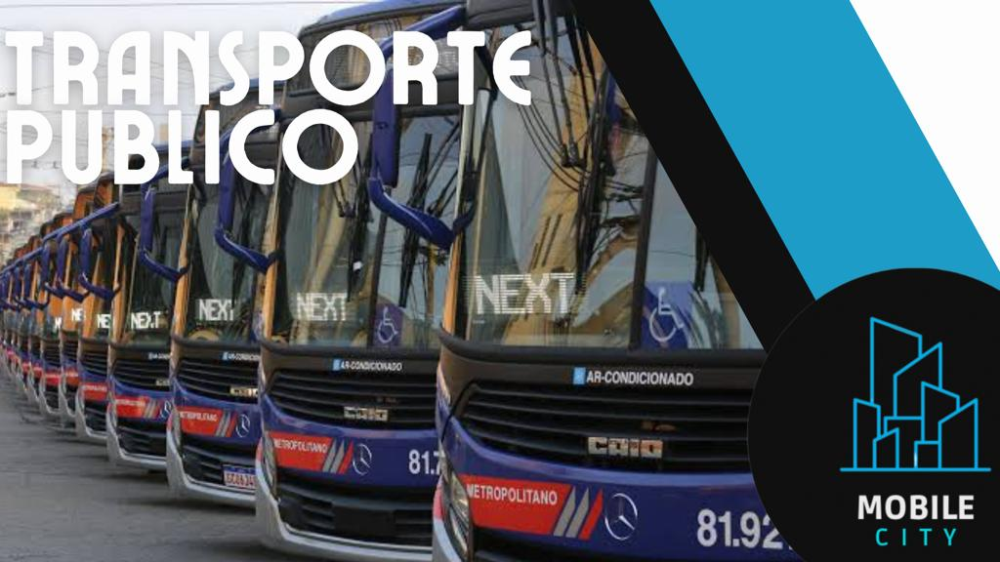

Sua parceira de mobilidade urbana para ir mais longe na cidade
Junte-se a nós em nossa missão de transformar a cidade em um lugar mais humano, inclusivo e vibrante para todos!
Desde a implantação da Zona Azul Digital em Fortaleza, a cidade tem se destacado como uma referência na promoção da mobilidade sustentável. A decisão da prefeitura de destinar 100% da arrecadação para a ampliação da política cicloviária é uma iniciativa importante que tem gerado bons resultados.
A cidade tem investido na construção de novas ciclovias e na melhoria das já existentes. Além disso, o programa Bicicleta Integrada oferece aos usuários de bicicleta a possibilidade de combinar o uso da bike com outros modais de transporte, como ônibus e metrô, de forma integrada e facilitada.
Outro projeto inovador da cidade é o Bicicletar, que é um sistema de compartilhamento de bicicletas. Esse programa tem como objetivo incentivar o uso de bicicletas como meio de transporte, além de reduzir o trânsito e a poluição na cidade.
Além da promoção do uso de bicicletas, Fortaleza também possui um programa pioneiro na América Latina para o compartilhamento de carros elétricos, o VAMO. Esse programa tem como objetivo estimular o uso de energia sustentável, reduzir a emissão de gases poluentes e oferecer aos usuários uma alternativa de transporte mais econômica e sustentável.
Os carros elétricos compartilhados estão disponíveis em diversos pontos da cidade e podem ser utilizados pelos usuários mediante cadastro e pagamento de uma taxa. Essa iniciativa tem sido bem recebida pela população, que tem demonstrado interesse em utilizar veículos elétricos como alternativa aos carros movidos a combustíveis fósseis.
Além dos projetos de compartilhamento de bicicletas e carros elétricos, a cidade tem investido em outras iniciativas para a promoção da mobilidade sustentável, como a ampliação do sistema de transporte público e a melhoria das condições de circulação para pedestres.
Fortaleza tem se destacado como uma cidade comprometida com a promoção da mobilidade sustentável e tem conseguido resultados positivos na redução do trânsito e da poluição. A destinação da arrecadação da Zona Azul Digital para a ampliação da política cicloviária tem sido um fator importante para o sucesso dessas iniciativas.
As medidas adotadas em Fortaleza para a promoção da mobilidade sustentável são um exemplo a ser seguido por outras cidades do país. A destinação da arrecadação da Zona Azul Digital para investimentos na ampliação da política cicloviária e a criação de programas de compartilhamento de bicicletas e carros elétricos são iniciativas que podem ser aplicadas em outras localidades.
A construção de ciclovias e a melhoria das já existentes são ações importantes para incentivar o uso de bicicletas como meio de transporte. Além disso, o programa Bicicleta Integrada pode ser replicado em outras cidades, possibilitando que os usuários de bicicleta tenham maior facilidade para combinar o uso da bike com outros modais de transporte.
O sistema de compartilhamento de bicicletas Bicicletar também é uma iniciativa que pode ser replicada em outras localidades. Esse programa é uma alternativa viável para incentivar o uso de bicicletas como meio de transporte e reduzir o trânsito e a poluição nas cidades.
O programa VAMO, de compartilhamento de carros elétricos, é uma iniciativa pioneira na América Latina que pode ser replicada em outras cidades do país. Com o objetivo de estimular o uso de energia sustentável e reduzir a emissão de gases poluentes, esse programa pode ser uma alternativa viável para incentivar o uso de veículos elétricos como alternativa aos carros movidos a combustíveis fósseis.
Além das iniciativas específicas de compartilhamento de bicicletas e carros elétricos, outras ações podem ser adotadas em outras cidades para a promoção da mobilidade sustentável. A ampliação do sistema de transporte público e a melhoria das condições de circulação para pedestres são medidas importantes que podem ser aplicadas em outras localidades.
A destinação de recursos para a ampliação da política cicloviária e para programas de compartilhamento de bicicletas e carros elétricos é uma iniciativa importante que pode ser replicada em outras cidades do país. Além disso, a adoção de outras medidas para a promoção da mobilidade sustentável pode contribuir para a redução do trânsito e da poluição nas cidades, tornando-as mais sustentáveis e agradáveis para seus moradores.
|  Transporte público |
Ciclovias e bicicletas |
Acessibilidade urbana |
Planejamento urbano |
Gestão de tráfego |
Segurança no transito |
Integração entre modais |
Técnologias sustentaveis |
Mobilidade inteligente |
Bem-vindo(a) ao grupo Mobile City! Somos um coletivo apaixonado por mobilidade urbana e dedicado a criar soluções inovadoras para os desafios que as cidades enfrentam atualmente. Nossa missão é transformar o modo como nos movemos e vivemos nas áreas urbanas, promovendo uma mobilidade mais eficiente, sustentável e inclusiva.
Vivemos em uma era de urbanização acelerada, onde as cidades estão se expandindo rapidamente e a população está cada vez mais conectada e móvel. No entanto, com esse crescimento, surgem também diversos problemas relacionados à mobilidade, como congestionamentos, poluição do ar, falta de infraestrutura adequada e desigualdades no acesso ao transporte.
O Mobile City surge como uma resposta a esses desafios, buscando promover soluções inovadoras e sustentáveis para melhorar a qualidade de vida nas cidades. Acreditamos que a mobilidade urbana deve ser pensada de forma integrada, considerando o transporte público, o uso de veículos compartilhados, as bicicletas, os pedestres e as novas tecnologias.
Nosso grupo é composto por uma equipe multidisciplinar, formada por urbanistas, engenheiros, arquitetos, cientistas sociais e especialistas em tecnologia. Trabalhamos em estreita colaboração com governos locais, organizações não governamentais e empresas privadas para desenvolver soluções inovadoras e implementar projetos pilotos em diferentes cidades ao redor do mundo.
Nossas áreas de atuação abrangem desde a criação de sistemas de transporte público eficientes e acessíveis, até o desenvolvimento de aplicativos e plataformas digitais que facilitam a integração e o planejamento da mobilidade urbana. Além disso, promovemos ações de conscientização e educação para incentivar comportamentos mais sustentáveis e o uso consciente dos recursos disponíveis.
Estamos comprometidos em construir cidades mais humanas, onde as pessoas possam se locomover de forma segura, rápida e sustentável. Acreditamos que a mobilidade urbana é um direito de todos, independentemente de sua condição social, econômica ou física. Trabalhamos para garantir que as cidades sejam lugares mais inclusivos, onde o acesso ao transporte seja equitativo e as oportunidades estejam ao alcance de todos.
O grupo Mobile City está entusiasmado em fazer parte dessa transformação urbana, contribuindo para a construção de um futuro melhor e mais sustentável. Junte-se a nós nessa jornada e vamos juntos criar cidades onde a mobilidade seja um facilitador para o progresso e a qualidade de vida de todos os seus habitantes.